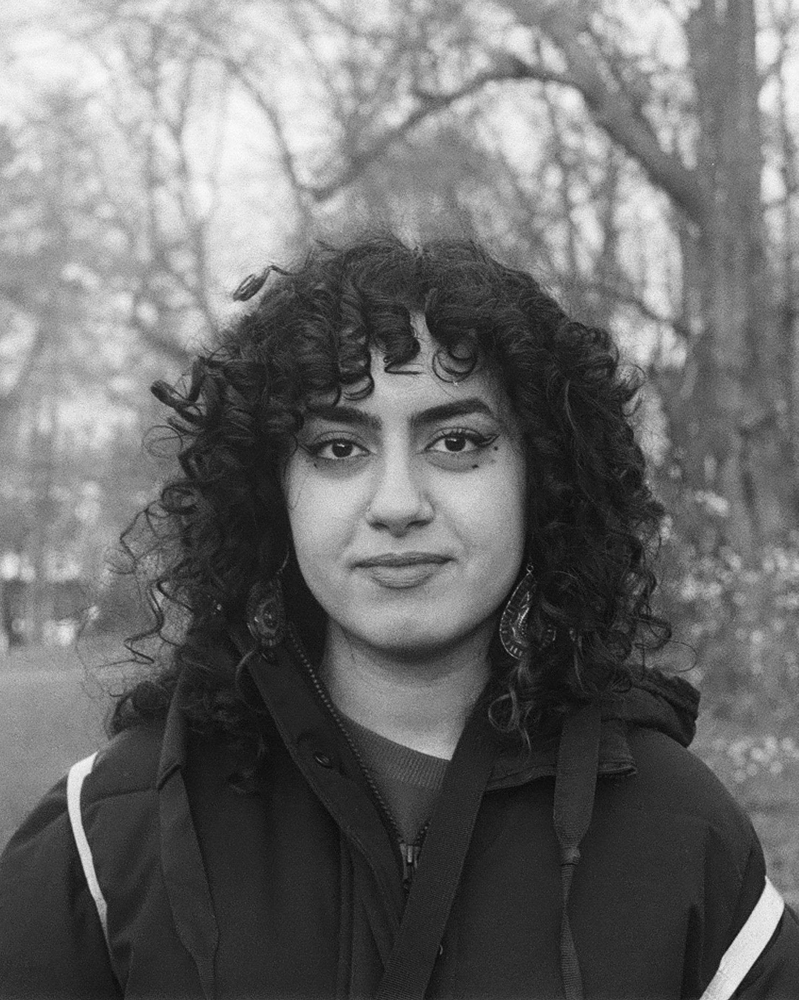

Hi! I'm Nadia. I'm an Egyptian-American audio engineer and musician from New York. Since studying Music Technology at New York University, where I completed a senior capstone project researching room acoustics, I have done a variety of work in live sound, electronics, and music education.
My love for audio derived from years spent as a performer. Originally trained in Western classical style, I have explored styles including Western classical, jazz, and Arabic. I am especially drawn to ensemble performing and exploring the potential of vocal harmony and the human voice in various contexts. I also play the piano.
Outside of music and audio, I love photography, biking, and reading about urbanism.
I am always eagerly looking for opportunities in anything audio or music! Reach me at nadiao.sound (at) gmail.com.